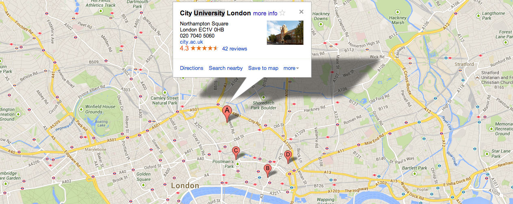

Education taken before gaining a first degree, often called a bachelors degree.
related subject: Information Science
Education underpinned by award-winning research and technology consultancy in the heart of TechCity .
Our computing courses have close links with business and the professions through partnerships for work placement and internship opportunities. This means that our students have an enviable employability record based on our focus on academic knowledge and practical ability and the essential networking skills and contacts gained through their degrees.
of computing and IT undergraduates were employed within six months of graduation.
Ranked …
… in the UK for offering graduates the best prospects following their studies.
Our graduates have one of the highest rates of employment and earn competitive salaries throughout the computing sector, securing positions in long-established key companies and the brightest start-ups. Our degree-level computing courses are validated by The BCS, CILIP and SAP.
Education taken before gaining a first degree, often called a bachelors degree.
Education taken after gaining a first degree, often called a masters degree.
Courses for individual learners as well as employers seeking staff development opportunities.
Industry partnerships ensure that our students benefit from valuable work experience and can foster links between their academic knowledge and practical ability and gain essential networking skills and contacts. Our Graduates are equipped with an extraordinary portfolio, high level thinking, learning and practical skills that they need to succeed in computing today.
Joy’s work placement at IBM enabled her to graduate with integral experience that she is able to bring to her career as an Analyst at Cisco Systems.
InternRyan is studying for an MSc in Electronic Publishing and is one of City’s student bloggers who engages with his readers over life as an international student in the School of Mathematics, Engineering, Computer Sciences at City.
BloggerMilan is a Business Computing Systems student who underwent a work placement at Sybase as a Routing Operations Analyst. Milan was involved in an array of projects testing SMS and MMS messaging platforms and is able to apply the important skills to her/his own Dissertation.
AlumnusFilter Computing Stories:
Facilities (3) History (2) Research Spotlights (1) News Story (2) Events (3)City celebrates Ada Lovelace Day, acknowledging the contribution of the world's first computer programmer.
Peter Hendy, one of the UK's first ever Mathematics and Computing graduates, looks back at his Northampton Square beginnings.
The focus for the evening is on current cost cutting opportunities for alternative FREE software.
We're in the heart of East London Tech City, the biggest computing technology community outside of Silcon Valley. We focus on our relationships with partners in industry and the professional world of technology, business, government, arts and heritage.
School of Informatics, City University London, Northampton Square, London, EC1V 0HB
Our internationally renowned research has a long-standing focus on software systems engineering and information intensive systems. We develop novel, enduring and experimentally validated concepts, theories and methods with a wide range of industrial partners in the UK and overseas.